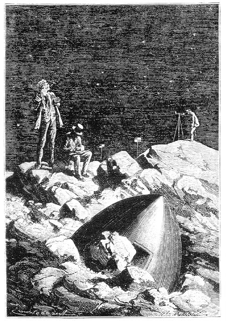
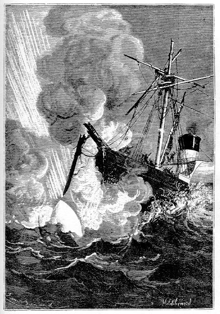

Capítol XX
ELS SONDEIGS DE LA SUSQUEHANNA
-Ei, tinent, com va aquest
sondeig?
-Crec, senyor, que l'operació ja toca a la seva fi - respongué
el tinent Bronsfield -. Però ¿qui havia de creure's trobar una
tal profunditat tan a prop de terra, a un centenar de llegües tan sols
de la costa americana?
-Certament, Bronsfield, és una forta depressió - digué
el capità Blomsberry -. Existeix en aquest indret una vall submarina
aprofundida pel corrent de Humboldt que segueix les costes d'Amèrica
fins a l'estret de Magallanes.
-Aquestes grans profunditats - continuà dient el tinent - són
poc favorables per a la col·locació de cables telegràfics.
Val més un planell unit, com el que sosté el cable americà
entre Valentia i Terranova.
-Ja hi convinc, Bronsfield. I, amb el vostre permís, tinent, quina profunditat
tenim ara?
-Senyor - respongué Bromfield -, tenim encara en aquest moment, vint-i-un
mil cinc-cents peus de sonda llançada a l'aigua, i l'escandall que arrossega
la sonda encara no ha tocat al fons, car la sonda hauria pujat per si mateixa.
-És un enginyós aparell aquest de Brook - digué el capità
Blomsberry -. Permet d'aconseguir sondeigs amb una gran exactitud.
-Toca! - cridà en aquest moment un dels timoners de proa que vigilava
l'operació.
El capità i el tinent s'encaminaren al castell de proa.
-Quina profunditat tenim? - preguntà el capità.
-Vint-i-un mil set-cents seixanta dos peus1 - respongué
el tinent tot escrivint aquesta xifra al seu quadern.
-Bé, Bronsfield - digué el capità -, vaig a anotar aquest
resultat en el mapa. Mentrestant, feu pujar la sonda a bord. És un treball
d'algunes hores. Durant aquesta feina el fogainer encendrà les calderes,
i així estarem a punt de partir quan haureu acabat. Són les deu
de la nit, i, amb el vostre permís, tinent, vaig a ficar-me al llit.
-Feu, senyor, feu - respongué polidament el tinent Bronsfield.
El capità de la Susquehanna, un brau home entre els valents i molt humil
servidor dels seus oficials, tornà a la seva cabina, prengué un
grog and brandy2 a que valgué a l'encarregat del
menjador inacabables mostres de satisfacció, i es ficà al llit
no sense abans haver adreçat els seus compliments al seu criat per la
manera de fer el llit, i s'adormí d'un son plàcid.
Eren, llavors, les deu de la nit. El dia onze del mes de desembre anava a acabar-se
amb una nit magnífica.
La Susquehanna, corbeta de cinc-cents cavalls de força, de la marina
nacional dels Estats Units, s'ocupava en la tasca de fer sondeigs pel Pacífic,
a cent llegües aproximadament de la costa americana,3
a través d'aquella península estiregassada que es dibuixa en la
costa de Nou Mèxic.
El vent, a poc a poc, havia amollat. Cap agitació feia tremolar les capes
de l'aire. El gallardet de la corbeta, immòbil, inert, penjava del pal
de goneta.

Em sembla que ja veig els nostres valents
El capità Jonathan Blomsberry - cosí germà del coronel
Blomsberry, un dels més apassionats membres del Gun-Club, que s'havia
emmullerat amb una Horschbidden, tia del capità i filla d'un honorable
negociant del Kentucky - no hauria pogut desitjar un temps millor per a menar
a bon terme les seves delicades operacions de sondeig. La seva corbeta no havia
sofert els efectes d'aquella immensa tempesta que, escombrant els núvols
amuntegats sobre les Muntanyes Roqueres, havia permès d'observar la marxa
del famós projectil. Tot anava al seu gust i ell no s'oblidava tampoc
de donar-ne gràcies al Cel amb el fervor d'un sacerdot.
La sèrie de sondeigs duts a terme per la Susquehanna no tenien altra
finalitat que reconèixer les fondàries més favorables per
a la col·locació, d'un cable submarí que havia de relligar
les illes Hawai amb la costa americana.
Era un vast projecte degut a la iniciativa d'una poderosa companyia. El seu
director, l'intel·ligent Cyrus Field, àdhuc pretenia cobrir totes
les illes de l'Oceania per mitjà d'una immensa xarxa elèctrica,
empresa grandiosa i digna del geni americà.
I era a la corbeta Susquehanna que havien estat confiades les primeres operacions
de sondeigs. En aquesta nit de l'11 al 12 de desembre, es trobava exactament
als 27º 7' de latitud Nord i als 41º 37' de longitud Oest del meridià
de Washington.4
La Lluna, aleshores, en el seu darrer quart, començava a mostrar-se damunt
de l'horitzó.
Després d'haver-se'n anat el capità Blomsberry, el tinent Bronsfield
i altres oficials s'havien reunit a l'entrepont. En aparèixer la Lluna,
llurs pensaments se n'anaren cap aquest astre, que els ulls de tot un hemisferi
contemplaven aleshores. Les millor ulleres de llarga vista de mariner no haurien
pogut descobrir el projectil errant a l'entorn de la seva semiesfera, i això
no obstant, totes s'enfocaren devers el seu disc brillant que milions de mirades
ullaven al mateix moment.
-Ja fa deu dies que partiren - digué llavors el tinent Bronsfield -.
Què deu ser d'ells?
-Hi han arribat, mon tinent - exclamà un jove guarda marina -, i ells
fan el que fa tot viatger arribat en un país nou: es passegen!
-Ho crec, perquè vós ho dieu, mon jove amic - respongué
el tinent Bronsfield.
-Tanmateix - reprengué un altre oficial -, no es pot posar en dubte llur
arribada. El projectil ha hagut d'haver arribat a la Lluna al moment en què
era plena, el dia 5 a la mitjanit. Som a l'11 de desembre,
o sigui que ja fa sis dies. Ara bé, en sis vegades vint-i-quatre hores,
i sense foscor, hi ha temps d'instal·larse confortablement. Em sembla
que ja veig els nostres valents compatriotes acampats al fons d'una vall, a
les vores d'un rierol selenita, prop del projectil mig enterrat per la caiguda
entre desferres volcàniques, i el capità Nicholl començant
les seves operacions d'anivellament, el president Barbicane posant en ordre
les seves notes de viatge, i Miquel Ardan perfumant les solituds lunars amb
la flaire dels seus londres...5
-Sí, això ha d'ésser així, així mateix! -
exclamà el jove guarda marina, entusiasmat per la descripció ideal
del seu superior.
-Ho vull creure - respongué el tinent Bronsfield, que no s'entusiasmava
gaire -. Per dissort, les noves directes del món lunar ens mancaran sempre.
-Perdoneu, mon tinent - digué el jove guarda marina -, però el
president Barbicane ¿no ens pot escriure?
Un esclat de rialles acollí aquesta resposta.
-No pas cartes - reprengué vivament aquell jove -. L'administració
de Correus no té res a veure-hi, aquí.
-¿No és pas l'administració de les línies telegràfiques?
- preguntà irònicament un dels oficials.
-Res d'això tampoc - respongué el jove guarda marina, que no s'immutava
-. Però és molt fàcil d'entaular una comunicació
gràfica amb la Terra.
-I com?
-Per mitjà del telescopi de Long's-Peak. Ja sabeu que apropa la Lluna
a dues llegües solament de les Muntanyes Roqueres,6
i que permet de veure, a la seva superfície, objectes que tinguin nou
peus de diàmetre.7 Doncs bé, que els nostres
enginyosos amics construeixin un alfabet gegantí! Que escriguin paraules
de cent toeses de longitud i frases duna llegua de llargària, i així
podran enviar-nos notícies seves!
Van aplaudir xardorosament el jove guarda marina, que per cert, no deixava de
tenir una certa imaginació. El mateix tinent Bronsfield convingué
que la idea era executable. Va afegir que amb la tramesa de raigs lluminosos
agrupats en feixos per mitjà de miralls parabòlics també
es podien establir comunicacions directes. Certament, aquests raigs també
serien visibles a la superfície de Venus o de Mart, com el planeta Neptú
ho és de la Terra. Va acabar dient que punts brillants ja havien estat
observats sobre els planetes més propers i que bé podrien ésser
senyals fets a la Terra.8 Però féu remarcar
que, si bé per aquest mitjà es podien tenir notícies del
món lunar, no se'n podien enviar del món terrestre, llevat que
els selenites tinguessin a llur disposició instruments adequats per a
fer observacions llunyanes.

Pocs peus més
-Evidentment - respongué un dels oficials -, però el que ha estat
dels viatgers, el que han fet, el que han vist, heus aquí el que ens
ha d'interessar sobretot. Ultra això, si l'experiment ha reeixit, de
la qual cosa jo no dubto, ja es repetirà. El Columbiad segueix encastat
en terres de la Florida. Això no és més que una qüestió
de bala i de pólvora, i totes les vegades que la Lluna passarà
pel zenit se li podrà enviar un carregament de queviures.
-I és evident - respongué el tinent Bronsfieldque J.-T. Maston,
en una d'aquestes vegades anirà a reunir-se amb els seus amics.
-Si m'hi vol - exclamà el jove guarda marina -, estic disposat a acompanyar-lo.
-Oh, d'aficionats, no en mancaran pas! - replicà Bronsfield -, i, si
se'ls deixa fer, aviat la meitat dels habitants de la Terra haurà emigrat
a la Lluna!
Aquesta conversació entre els oficials de la Susquehanna s'allargà
fins prop de la una de la matinada. Ningú no sabria dir quins sistemes
més atorrolladors, quines teories més agosarades no foren exposades
per aquells esperits agosarats. Després de la tempativa de Barbicane,
semblava que res no havia d'ésser impossible als americans. I ells ja
projectaven d'expedir, no pas una comissió de savis, sinó tota
una colònia, devers les platges selenites, i tot un exèrcit amb
infanteria, artilleria i cavalleria, per conquerir el món lunar.
A la una de la matinada, l'operació de fer pujar la sonda encara no s'havia
acabat. Restaven encara, deu mil peus per retirar, la qual cosa exigia unes
quantes hores de treball. Obeint ordres del comandant, les calderes havien estat
enceses i la pressió era alta. La Susquehanna hauria pogut partir aleshores
mateix.
En aquell moment - era la una i disset minuts de la matinada -, el tinent Bronsfield
es disposava a abandonar la guàrdia i tornar a la seva cabina, quan la
seva atenció fou atreta per un xiulet llunyà i completament inesperat.
Tant els seus companys com ell cregueren de moment que aquest xiulet era produït
per una fugida de vapor, però en aixecar el cap pogueren constatar que
aquella remor es produïa vers les capes més llunyanes de l'aire.
No havien tingut temps encara de fer-se cap pregunta quan aquell xiulet prenia
una intensitat horrorosa, i, sobtadament, a llurs ulls enlluernats, aparegué
un bòlid enorme, inflamat per la rapidesa de la seva cursa i pel seu
fregadís per les capes atmosfèriques.
Aquella massa ígnia s'engrandí a llurs mirades, va abatre's amb
la fressa del tro sobre el bauprès de Ia corbeta, que estavellà
gairebé arran mateix de l'estrau, i s'enfonsà dins les ones amb
una remor eixordadora!
Pocs peus més, i la Susquehanna sotsobrava amb tripulació i equipatge.
En aquell instant, el capità Blomsberry aparegué mig vestit i
corrent cap al timoner del castell de proa, al qual ja s'havien precipitat també
els seus oficials.
-Amb el vostre permís, senyors, què ha passat? - preguntà.
I el jove guarda marina, interpretant, per dir-ho així, el pensament
de tots, exclamà:
-Comandant: Són "ells" que tornen!
1. 7.070 metres.
2. Beguda alcohòlica amb aigua. (N. del T.)
3. 400 quilòmetres.
4. Exactament als 119º 55' de longitud Oest del meridià
de París.
5. Certa mena de cigar havà que abans es fabricava
per Anglaterra (N. del T.)
6. 8 quilòmetres.
7. 2,75 metres. Recordi's que el telescopi de Mont Palomar
permet veure un objecte a la Lluna que tingui prop d'11 metres. (Nota del Traductor.)
8. Efectivament, en algunes rares ocasions, hom ha vist
aparèixer algun punt brillant en el disc de Mercuri o de Venus i els
astrònoms no n'han pogut definir la natura. (N. del T.)